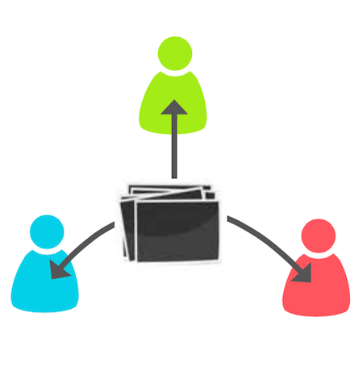
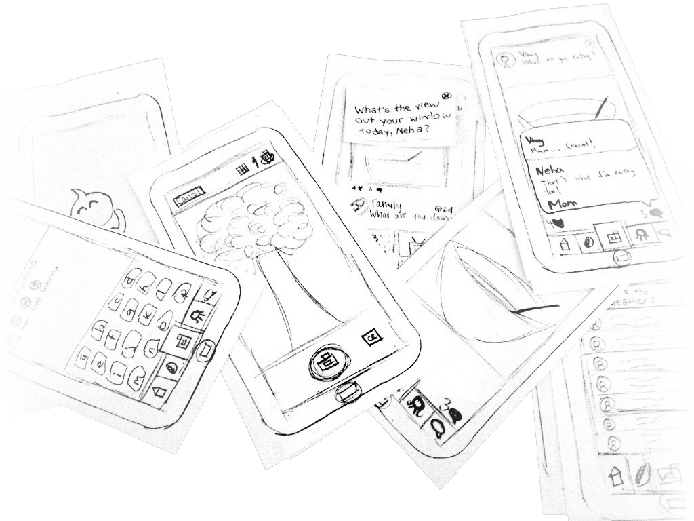
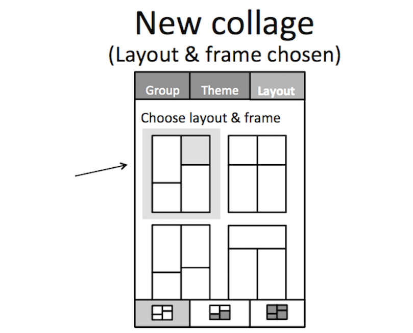
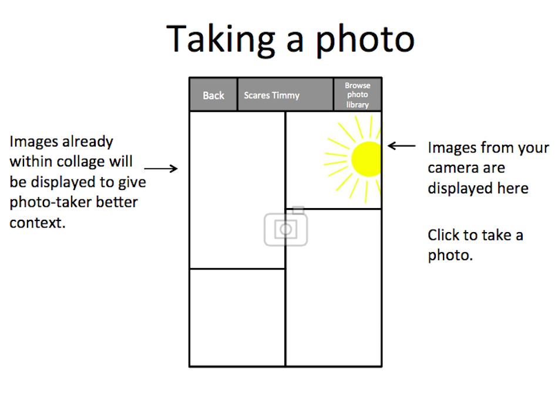
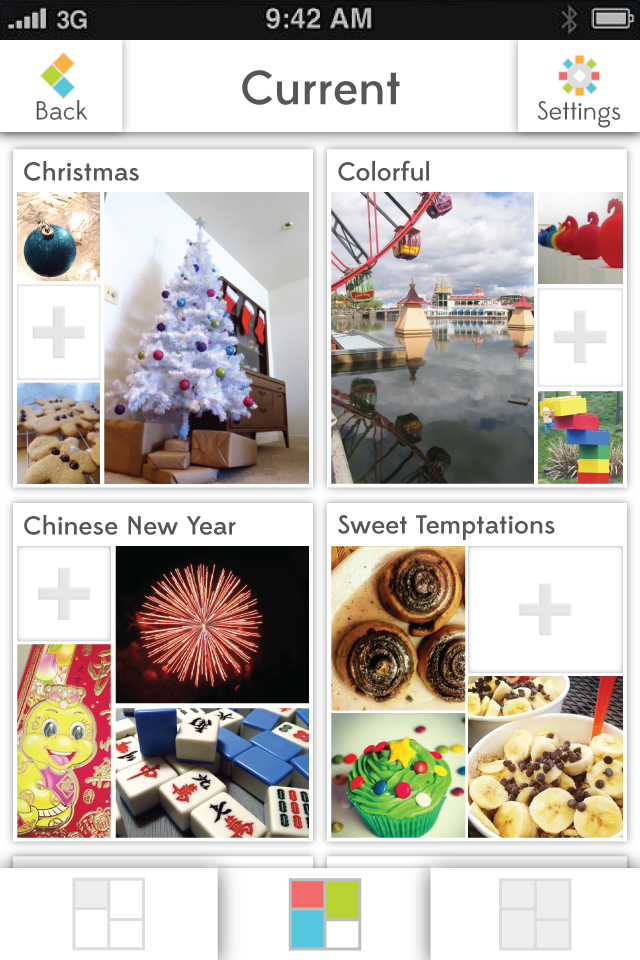
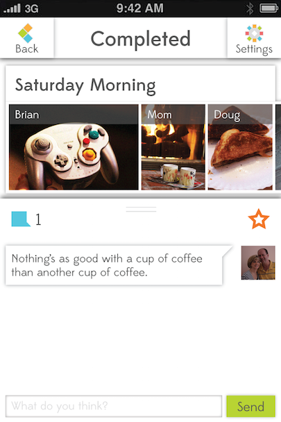
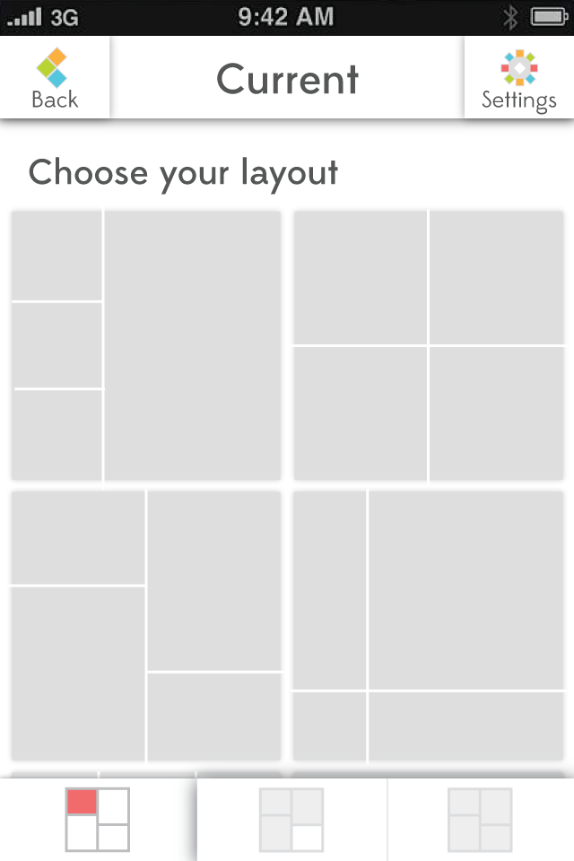
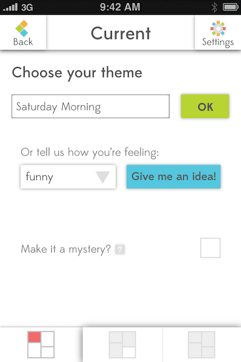
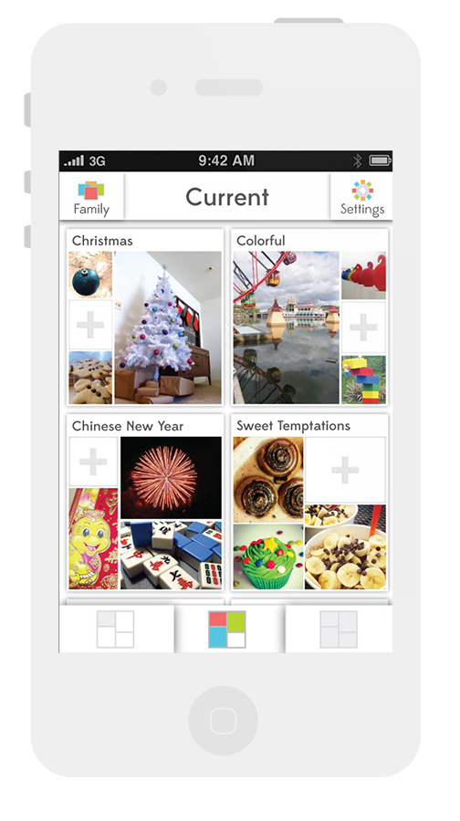

When families are separated by distance, coordinating communication becomes difficult. Pico is a mobile application that aims to provide a personal way for families to connect using their smartphone cameras.
User Research
We conducted initial interviews with parents and asked about the challenges they faced in connecting with their children. From there, we narrowed our scope to focus on families with children in college and conducted interviews with three sets of parents and children about how they share information and keep in contact. Many families struggled with coordinating their busy schedules and how to determine which information was appropriate to share. We also found that pictures were a powerful communication tool for sharing important family moments.
We identified a need for a service that gives families a personal, engaging way to connect that is easy enough to fit into their busy lives.
You can find out more about our research and concept here
Paper Prototyping
We came up with a concept that would allow families to share glimpses of their lives quickly and easily using their smartphone camera. After creating quick paper mockups of the interface, we tested them with potential users to gather feedback about both the concept and the interface. We learned that the idea of sharing photos was intriguing to people, but there would need to be a unique hook to get them to invest time in a new app.
Wireframes
Before starting on visual design, we spent some time defining the interactions, particularly around creating a collage and uploading photos.
 Final Designs
Since the entire concept of Pico centers around a lightweight, quick way to share moments with family members or friends, a big challenge was figuring out how to keep the content from becoming overwhelming. We didn't want one person to be able to overwhelm the feed of photos and dominate the conversation. We also wanted to encourage curation, sharing a glimpse of a moment rather than 100 photos of the same moment. Although we discussed various ways of limiting information, such as a daily limit on how many photos could be added, none of them felt quite right, especially since we hoped to have people returning to the app often. We finally settled on the model of creating group collages centered around a theme or question. Each person in the group would only be able to contribute one photo to each collage, but multiple collages could be in progress at any point in time.
   Users can choose from several preset layouts and can either create their own theme, or have one randomly generated for them. They also have the options of seeing the collage's progress as others add photos, or waiting to be surprised until the collage is complete.
Concept Video
Interactive Prototype
I created an interactive prototype, using Fireworks, which can be accessed here. For the best experience, visit the link on an iPhone and save the page to your home screen. This will allow the prototype to behave more like an actual application.